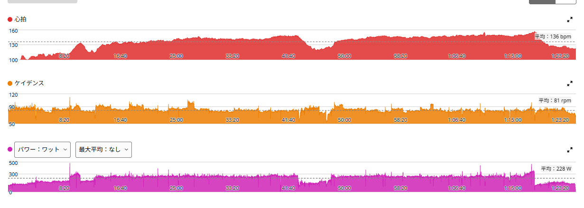

20分×3のつもりが、30分×2へ。持続力が一段上がってきたかもしれない
今日はローラーでSST。もともとの予定は20分×3本だった。
ただ、1本目を走っている途中で「今日は30分までいけそう」という感覚があった。そこで予定を変えて、30分×2本、レスト5分でやってみることにした。

1時間24分・NP241W・TSS107.5
- 全体44.98km / 1時間24分20秒 / 平均228W / NP241W / IF0.877 / TSS107.5 / 平均気温27.0℃
- 心拍・回転平均136bpm / 最大157bpm / 平均81rpm
- 効果有酸素TE3.8 / 無酸素TE0.0 / 運動負荷170
パワーはゾーン4に40分54秒。心拍はゾーン3に58分49秒で、全体の7割近くを占めている。
256W・257Wで、30分×2本を完遂
- 1本目30分01秒 / 256W / 心拍平均139bpm・最大149bpm
- 2本目30分01秒 / 257W / 心拍平均146bpm・最大155bpm
ほぼ同じ出力で2本完遂。FTP設定275Wに対して約93%。この強度で合計60分を踏み切れた。

2本目は10分過ぎから「あと20分あるのか……」
数字だけ見ると、かなり綺麗に揃っている。でも、2本目は楽ではなかった。10分を過ぎたあたりから「これ、あと20分あるのか……」という感じで、かなりきつくなってきた。
そこで思い出したのが、先日の315W×5分×5本。あの日は特に4本目が本当にきつく、「もう無理かもしれない」と思いながら、なんとか5本目まで完遂した。それに比べれば、まだこっちの方が耐えられる。そう思えた。
最近の5分走で身についた「苦しいところを耐える感覚」が、今日の持続走にも少し活きた気がする。
いちばん大きいのは、60分維持できたこと
今日いちばん大きいのは、256〜257Wを30分×2本、合計60分維持できたことだと思う。
9月9日には249Wで40分の連続走をやって、後半は余裕がなくなり、終わったあとに続けようとしても2分で力尽きた。今日は間に5分のレストを挟んでいるので、連続走とそのまま比べられるものではない。それでも、より高い256〜257Wで合計60分。少しずつだが、長く踏み続ける力が上がってきている感じがある。
心拍は横ばい。比べる日によって見え方が変わる
最近は、同じような出力なのに心拍が低い日があって、その変化も気になっている。同じSSTの2日と比べると、こうなる。
- 9月11日（気温記録なし）20分で252W・140bpm / 253W・149bpm
- 9月24日（26.5℃）20分で250W・136bpm / 252W・140bpm
- 今日（27.0℃）30分で256W・139bpm / 257W・146bpm
9月11日と比べると、出力は少し高く、時間は20分から30分に伸びて、心拍は同等か少し低い。ただ9月11日は気温の記録がない。気温がそろっている9月24日と比べると、今日の方が少し高い。1本が長くなれば後半ほど心拍は上がるので悪い数字ではないが、毎回コンディションも違う。心拍は「横ばいか、少し良いかもしれない」くらいにしておく。
20分×3と30分×2、どっちも使う
今後は両方使っていけそうだ。20分×3は区切りが多い分、3本目まで高めの出力を維持しやすい。30分×2は1本あたりが長いので、より「長く耐える」感覚を作れる。富士ヒルを考えると、どちらも必要である。
なので今後は、SST20分×3、SST30分×2、315W×5分×5本。この3つを軸に回していく。
今日やってみて思ったこと
今日は、最初から30分×2をやるつもりではなかった。「今日はいける」という感覚を信じて伸ばしてみたら、完遂できた。最近は数字だけでなく、「この苦しさならまだ耐えられる」という感覚も分かってきた気がする。
少しだけ予定を伸ばしてみたら、思っていたより、ちゃんと走れた。
次に見るポイント
- 再現性256〜260Wで30分×2を再現できるか
- 2本目の後半10分過ぎからの苦しさが、少しずつ軽くなるか
- 心拍気温がそろった日同士で比べて、同じ出力の心拍が下がっていくか
- 耐える感覚5分走で得た苦しさへの耐性が、持続走でも活きるか
- 組み合わせ315W×5分×5本と回して、どこまで伸びるか